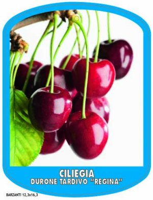

Pommes
POMME D' OR
Maturation septembre-octobre
Starking
Mûrit dans les premiers jours d'octobre.
Empereur
Maturation fin octobre.
Gala royal
Mûrit le 20 août.
Poires
Williams
Mûrit le 10 août
Poire Decana dell Comizio
Maturation en septembre.
Conférence
Maturation août-septembre.
Abbé
Mûrit en septembre.
Jambe
Morettini précoce
Mûrit le 15 juillet.
Pesche
Redhaven
Maturation de la première à la deuxième décade de juillet.
Fayette
Maturation le 20 août.
SpringCrest
Maturation à la deuxième semaine de juin
Ma crête
Mûrit la deuxième semaine de juin.
Maria Bianca
Affinage à partir de la mi-juillet
OR ROUGE ÉTOILE
Affinage deuxième semaine d'août.
Vénus
Mûrit à partir du 10 août
Maria Aurelia
Mûrit les dix premiers jours d'août.
Albicocco
Precoce d'Imola
Maturation 1ère décade de mars (mi-précoce)
Sungiant
Maturation le 15 juin.

Reale d'Imola
Maturation le 5 juillet.
Bouche lisse
Maturation le 30 juin.
Arcades
Maturation le 30 juin.
cerisier
Kordia
Maturation le 25 juin.
Reine
Maturation le 25 juin.
Chemin de fer
Maturation le 20 juin.
Burlat
Maturation le 25 mai.
Giorgia
Maturation 5/10 juin.
Mora di Cazzano
Maturation 15/20 juin.
Van
Maturation le 15 juin.
les raisins
prune
Santa Rosa
Mûrit le 25 juillet.
Goutte d'or
Mûrit le 25 juillet.
Stanley
Maturation le 25 août.
Buffet
Président
Maturation le 15 septembre.
Sang de dragon
Maturation 20/30 août.
Formose
Maturation le 20 juillet.
Sourire de printemps
Maturation le 30 juin.
Fruits mineurs
Coeur
Maturation d'automne.
wot
Groseilles (rouge, noir)
Maturation juin, avec récolte de juin à septembre.
Grenade
Maturation d'automne.
Figue
Maturation en septembre.
Framboises
Maturation et récolte: juillet et août.
Myrtilles
Maturation des myrtilles: juin-août. Maturation de la canneberge: automne.
châtaigne
Maturation d'automne.
Poire Jujube
Maturation en octobre.
jujube à pomme
Maturation en octobre.
Groseille jaune
Maturation en juillet.